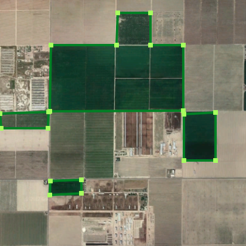

Irrigated fields |
Identification
What does an irrigated field look like?
An important indicator of electricity access in rural areas is the presence of irrigated fields. These fields are easy to identify compared to some other indicators. Look for a green area, usually in a geometric shape, surrounded by brown or tan. A green color that sticks out compared to the surroundings is evidence that water is being supplied to the field through irrigation systems.
Examples

The circular shape of these fields and the consistent green color compared to their surroundings indicate that these fields are irrigated.

The distinct rectangular shape and green color of these fields shows that they are irrigated.
The distinct rectangular shape and green color of these fields shows that they are irrigated.
Frequently Asked Questions
- What if an irrigated field is on the edge of this image?
- What if a field is green but the surrounding land is also green?
- Draw a polygon around the parts that you can see.
- If you can't distinguish a field based on how green it is, don't mark it.